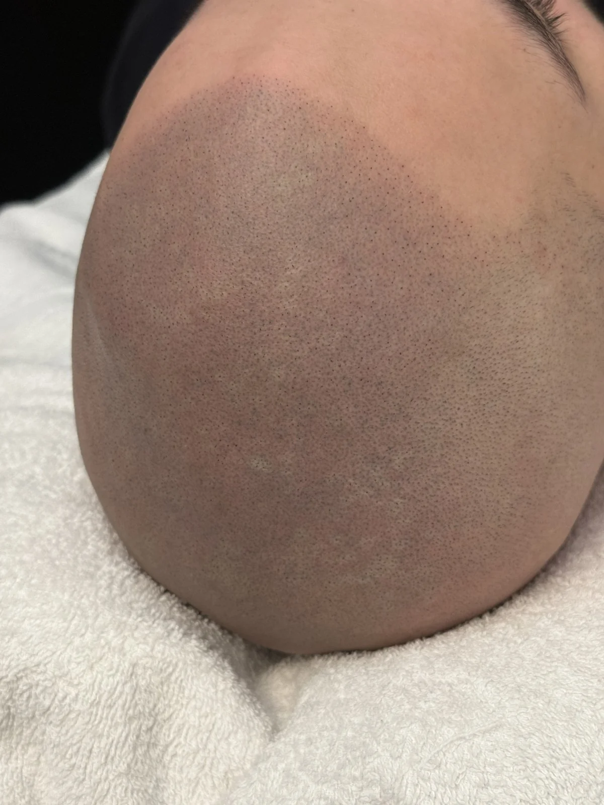
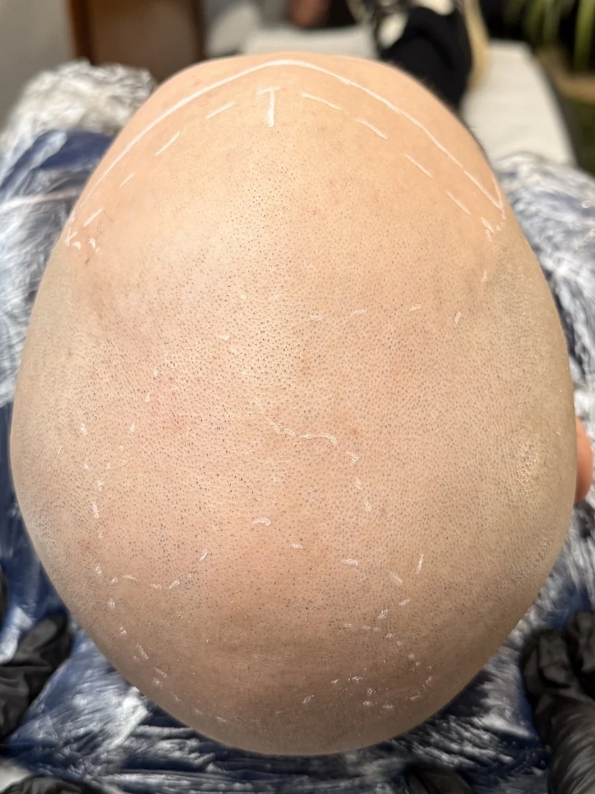
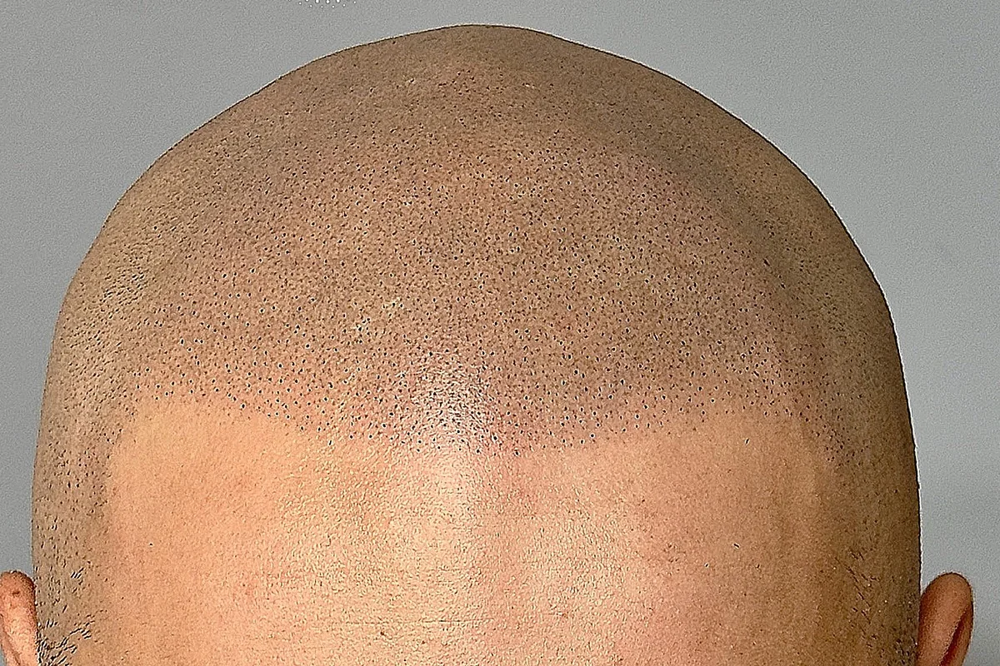
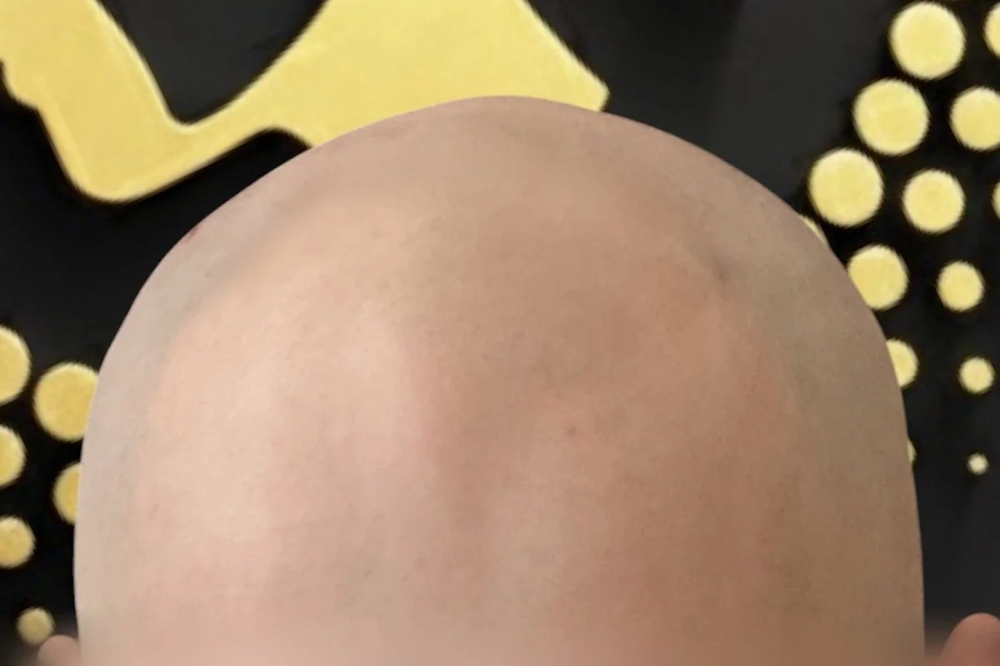
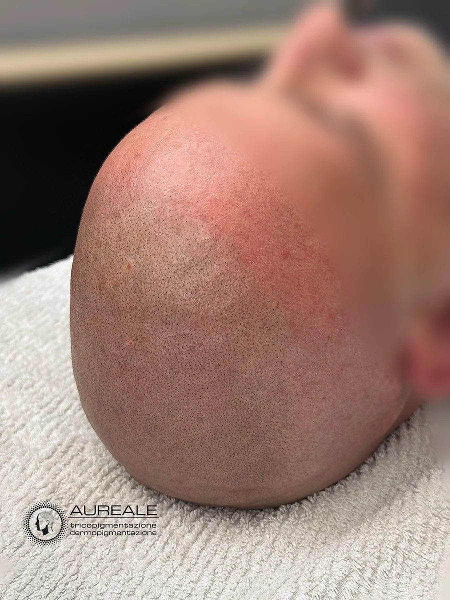
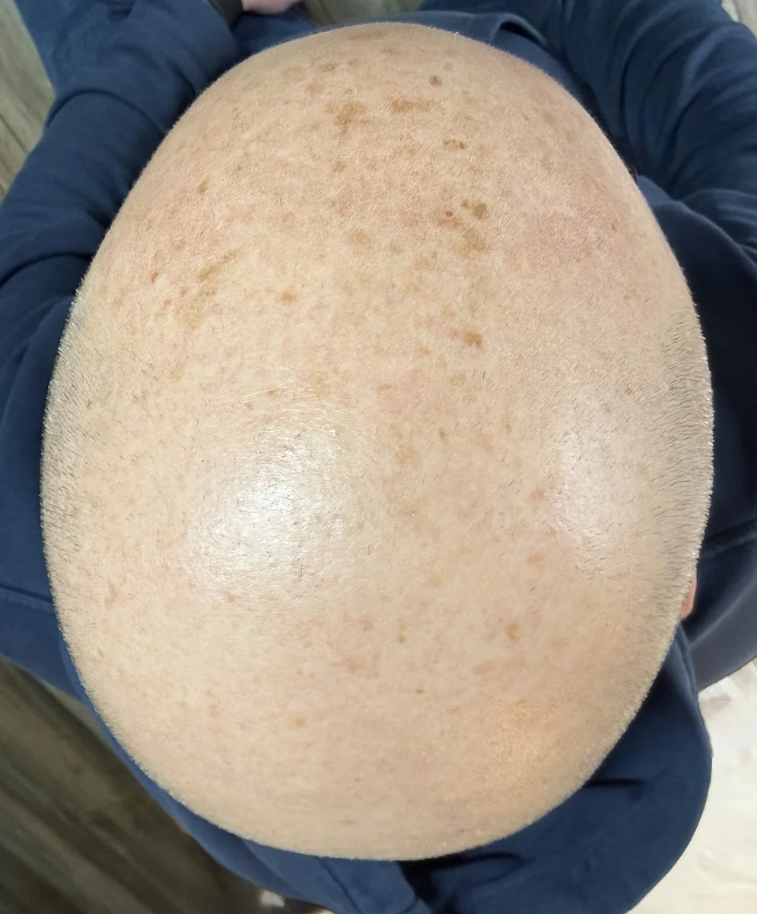
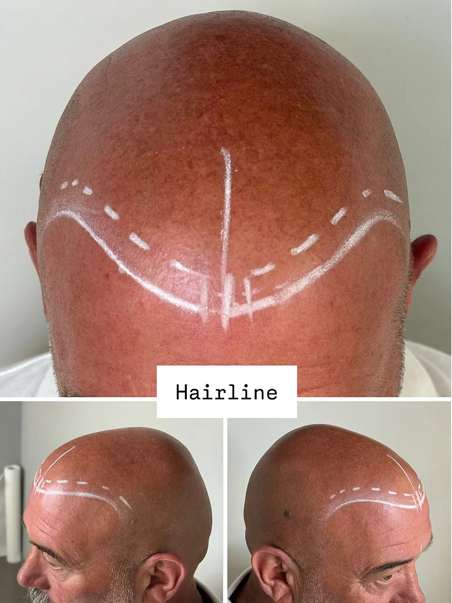

Esperienza personale, non è la solita trico, ma qualcosa che va ben oltre! Migliora l’aspetto estetico e allo stesso tempo sa consigliarti e accompagnarti verso un cambiamento graduale, tutto con la massima serenità raggiungendo un risultato evidente al di sopra delle aspettative. La consiglio vivamente.
Primo taglio di capelli dopo l’ultima seduta! Che ne pensi? A me sembra spettacolare, mi dicono tutti che sto meglio così di prima.
Messaggio di un cliente
★★★★★
Ho effettuato il trattamento con tecnica “effetto densità” per mascherare un diradamento diffuso sulla parte superiore della testa. Il pigmento utilizzato ha eliminato completamente quel fastidioso contrasto bianco tra la pelle e i capelli, dando l’illusione ottica di una chioma decisamente più folta e piena.
Lascia il tuo nome e il tuo numero: ti contatto personalmente per fissare la consulenza gratuita, di persona, a Roma, zona Flaminio. Senza impegno.
Per inviare le foto, usa WhatsApp: restano tra noi e servono solo alla valutazione.
I trattamenti di tricopigmentazione
Scorri e scegli: ogni voce ha la sua spiegazione e le sue foto.
Infoltimento
Per chi ha ancora capelli, ma radi. La cute si vede meno e la zona appare più piena e uniforme, senza modificare i capelli esistenti.
Quando i capelli residui lasciano intravedere la cute, il contrasto tra pelle e capelli accentua il diradamento. I microdepositi riducono quel contrasto e aumentano la densità percepita, senza modificare i capelli esistenti. Il caso mostrato è un infoltimento della zona frontale, con esiti cicatriziali di un trapianto che non aveva attecchito: il trattamento ha reso la zona più omogenea.
Per le cicatrici FUT e FUE. Microdepositi calibrati sui capelli circostanti rendono le cicatrici meno visibili, dopo la guarigione completa.
Dopo un trapianto di capelli possono restare cicatrici lineari (FUT), cicatrici puntiformi (FUE) o una densità non uniforme. La tricopigmentazione le mimetizza con microdepositi di pigmento, uniformandole ai capelli circostanti con un effetto naturale. Non cancella la cicatrice: ne riduce la visibilità.
Si fa dopo la guarigione e la stabilizzazione del trapianto: le linee guida richiamate negli approfondimenti indicano di attendere circa un anno. Una cicatrice è un tessuto più fibroso e meno elastico, che assorbe il pigmento in modo meno prevedibile: per questo il lavoro è progressivo e preceduto da una valutazione e da un test.
Nel mio protocollo di solito servono 3-4 sedute, a distanza di almeno 7 giorni l'una dall'altra, con un controllo dopo 30-40 giorni e un mantenimento dopo un anno, un anno e mezzo. Se ne serve una in più, è compresa nel prezzo.
Cicatrice lineare nella zona della nuca, mimetizzata con microdepositi calibrati sui capelli circostanti: la linea chiara perde evidenza e la zona risulta più continua.
Su aree prive o molto povere di capelli, i microdepositi riproducono otticamente l'ombra dei follicoli di una testa rasata. È indicato nella calvizie avanzata o per chi sceglie di portare i capelli molto corti: la densità risulta uniforme ed è modulata su tono della pelle e colore dei capelli.

Dopo

Prima

Dopo

Prima

Dopo

Prima
Pelle molto chiara e delicata, capelli quasi completamente bianchi e numerose lentiggini e macchie sulla testa: il pigmento è stato calibrato per ottenere un risultato omogeneo, senza una macchia scura che contrastasse con i capelli bianchi. Il rossore visibile nella foto è una reazione della pelle delicata.
Per chi non vuole rasarsi. Il pigmento attenua il contrasto tra cuoio capelluto e capelli lunghi, per un'attaccatura più armoniosa e una testa visivamente più folta.
Non è necessario rasare tutto. Nell'effetto infoltimento l'obiettivo non è creare capelli che non esistono, ma ridurre il contrasto tra cuoio capelluto e capelli con micropigmenti che simulano visivamente i bulbi piliferi, senza fibre, polveri o prodotti coprenti da applicare ogni giorno.
Il risultato è una maggiore percezione di densità, un'attaccatura più armoniosa e una minore visibilità della pelle. Se un domani si decidesse di portare i capelli rasati, il trattamento si potrà uniformare al resto del cuoio capelluto.
Per il diradamento femminile. Un lavoro delicato su riga e sommità, che aumenta la densità percepita con un aspetto naturale.
Nel diradamento diffuso la cute diventa visibile, soprattutto sulla riga e sulla sommità. I progetti per la donna sono delicati: microdepositi pensati per aumentare la densità percepita mantenendo un aspetto naturale.
Scorri e scegli: ogni voce ha la sua spiegazione e le sue foto.
Sopracciglia
Dermopigmentazione con un disegno pensato sui lineamenti del viso, personalizzato in base a tipo di pelle e colore.
AUREALE Fusion Brows
Protocollo misto: tratti a effetto pelo, inseriti dove serve dare struttura, uniti a una sfumatura che dà profondità. È indicato per forme irregolari o con pochi peli.
Line Brows
Effetto pelo: tratti sottili che ricreano visivamente i singoli peli, seguendo la direzione naturale di crescita.
Dust Brows
Effetto sfumato, simile a un ombretto, con intensità modulabile.
Correzione di un precedente trattamento sulle sopracciglia, quando forma o colore non sono più soddisfacenti. Il risultato dipende dal pigmento già presente e dalla pelle, e si valuta in consulenza.
Contorno e colore ridefiniti, con un aspetto naturale. L'effetto, dal colore delicato alla colorazione piena, si sceglie in base alla forma delle labbra e al risultato desiderato.
AUREALE Velvet Lips
Colorazione omogenea di tutto il labbro: ridefinisce il contorno e dà maggiore presenza cromatica.
Bloom Lips
Contorno più definito, con colore che sfuma gradualmente verso l'interno.
Soft Lips
Un colore delicato, simile a un burrocacao, senza un effetto da rossetto.
Un tratto discreto per definire lo sguardo. Il pigmento si inserisce alla base delle ciglia e infittisce otticamente la linea ciliare, con un risultato naturale che non richiede di rifare il trucco ogni mattina.
Soft Liner
Tratto infracigliare con una piccola estensione sfumata, senza l'effetto grafico di un eyeliner classico.
Lash Frame
Tratto infracigliare molto sottile alla base delle ciglia: infittisce otticamente la linea ciliare in modo discreto.
Questo è il protocollo che seguo io: ogni professionista segue il proprio, con tempi e numero di sedute che possono essere diversi.
01
Consulenza gratuita, di personaSi valutano cute, aree diradate e cicatrici, che dalle foto non sempre si capiscono. Si definisce il risultato da ottenere.
02
Progetto e preventivoSi disegna la linea frontale, si stabiliscono le sedute e si fissa un prezzo personalizzato.
03
3-4 seduteNel mio protocollo di solito 3-4, a distanza di almeno 7 giorni l'una dall'altra.
04
ControlloNel mio protocollo, dopo circa 30-40 giorni si verifica il risultato.
05
MantenimentoNel mio protocollo una seduta dopo un anno, un anno e mezzo, a volte anche due: dipende dalla pelle e da come viene trattata.

Quanto costa la tricopigmentazionea Roma
Il preventivo si definisce dopo la consulenza, di persona, e si basa sul risultato, non sul numero di sedute. Dipende dalla densità dei capelli presenti e dalle zone da trattare: per questo non si può dare un prezzo online. Un'eventuale seduta in più è già compresa.
L'effetto è quello di capelli rasati: micropunti di dimensione e distanza diverse, senza linee nette. Il risultato dipende dalla pelle e dai capelli residui, e ne parliamo in consulenza. Approfondisci: effetto rasato.
Il colore cambia nel tempo?
I pigmenti sono pensati per attenuarsi gradualmente e, con gli anni, il tono può schiarire. Per questo scelgo il tono dopo aver osservato la tua pelle e i tuoi capelli, e nel mio protocollo prevedo un mantenimento. Approfondisci: pigmento e fagocitosi.
Fa male?
La sensazione varia da persona a persona e di solito è sopportabile. Non è un intervento chirurgico.
Quante sedute servono?
Nel mio protocollo di solito 3-4, a distanza di almeno 7 giorni l'una dall'altra, in base all'area da trattare. Si stabiliscono insieme in consulenza.
Sono Simona Reale, tricopigmentista e dermopigmentista a Roma, zona Flaminio. Ho iniziato nel 2008 lo studio del tatuaggio e della dermopigmentazione e mi sono poi specializzata in tricopigmentazione (SMP). Sono la fondatrice di AUREALE, il progetto in cui riunisco il mio metodo.
Sono abilitata dalla Regione Lazio come operatore delle attività di tatuaggio, una qualifica che comprende tricopigmentazione, dermopigmentazione e tatuaggio artistico. Continuo a seguire corsi di specializzazione, perché la competenza si costruisce nel tempo e si mantiene studiando.
Se hai fatto un trattamento, racconta la tua esperienza su Google: ci vuole un minuto e aiuta chi cerca un professionista a scegliere con più serenità.